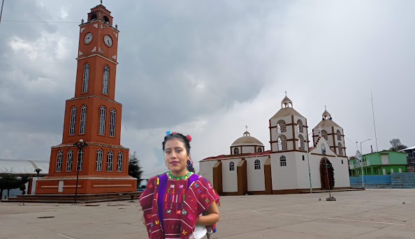

CECYTEO.EDU.MX
CECYTE.emsad
MUSEODETEXTIL

El lienzo triqui está representado principalmente por las figuras
de mariposa,escaleras y la cola de pescado que simbolizan la vida,
abundancia,prosperidad,transformación,belleza de la naturaleza y
fertilidad.Estas figuras en conjunto representan la identidad de las
mujeres de San Martin Itunyoso.Con el acceso a la tecnología se han
hecho adaptaciones al tejído,logrando hacer figuras como religiosas,
caricaturas,letras y emojis.Los colores en el tejido original son rojo,
verde,amarillo y anaranjado.Sin embargo,actualmente se utilizan
colores en negro,blanco,rosa,azul,morado y variantes de los colores
del tejído original.